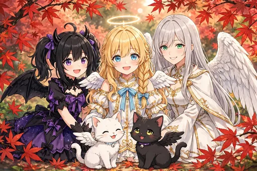
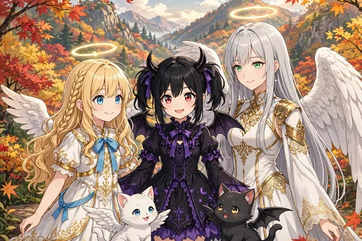
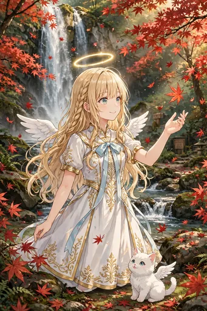
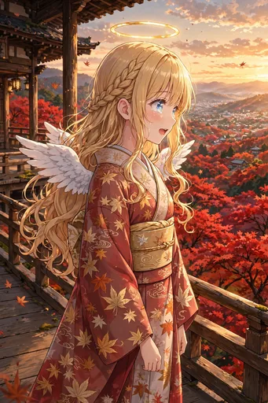

セラフィナ 第9弾『関西の紅葉めぐり編』イラストパック

ストーリー紹介
紅葉に染まる関西をめぐる、秋の旅の30枚です。箕面の滝から始まり、京都の寺と着物、嵐山・永観堂・東福寺、奈良の鹿、姫路城、六甲山の夕景まで。もみじの天ぷらや焼き芋の味覚も楽しみ、ルチアやガブリエラも合流して、紅葉ライトアップや嵯峨野トロッコ列車を経て、全員集合のフィナーレを迎える物語です。今回からガチャ・図鑑にも全点収録しました。
箕面の滝から始まり、京都の寺と着物、嵐山・永観堂・東福寺、奈良の鹿、姫路城、六甲山の夕景まで、紅葉の名所を巡る旅の記録です。もみじの天ぷらや焼き芋の味覚も楽しみ、ルチアやガブリエラも合流して、紅葉ライトアップや嵯峨野トロッコ列車を経て、全員集合のフィナーレを迎えます。日本橋を飛び出して関西を旅する、シリーズ初の旅編です。
ダウンロード販売（ZIP 3分割）／全年齢／BOOTH「angel222」で販売中
商品情報
| タイトル | セラフィナ 第9弾『関西の紅葉めぐり編』イラストパック｜見習い天使の現代日本コメディ |
|---|---|
| 収録内容 | イラスト30点（ダウンロード販売） |
| 価格 | 500円 |
| 販売 | BOOTH「angel222」 https://angel222.booth.pm/items/9083665 |
| 備考 | 全年齢。登場するキャラクターは架空の存在です。イラストにはAI生成を含みます |
場面紹介（全30枚）



- 1. 箕面の滝と紅葉 — 紅葉に囲まれた箕面の滝の場面。
- 2. 京都の寺と着物 — 京都の寺の舞台から紅葉を眺める、着物姿のセラフィナ。
- 3. 大阪城公園の紅葉 — 天守を背に、紅葉とイチョウに彩られた大阪城公園の場面。
- 4. 万博記念公園の日本庭園 — 日本庭園の池に映る紅葉とモコ。
- 5. 嵐山・渡月橋と紅葉 — 渡月橋と紅葉の山を望む嵐山の場面。
- 6. 永観堂の紅葉 — 放生池と紅葉で知られる永観堂の場面。
- 7. 東福寺の紅葉の海 — 通天橋から見下ろす紅葉の海のような東福寺の場面。
- 8. 貴船の紅葉と清流 — 貴船の清流と紅葉の場面。
- 9. 奈良公園の鹿と紅葉 — 奈良公園で鹿と紅葉に囲まれる場面。
- 10. 六甲山の紅葉と街の灯り — 六甲山から、紅葉と暮れ始める街の灯りを望む場面。
- 11. 姫路城と紅葉 — 白鷺城の白と紅葉の赤が映え合う姫路城の場面。
- 12. 床もみじ — 漆の机に映り込む紅葉を眺める「床もみじ」の場面。
- 13. もみじの天ぷら — 箕面名物もみじの天ぷらをほおばる場面。
- 14. 焼き芋とほかほか笑顔 — 焼き芋を手に、ほかほかと笑顔になる場面。
- 15. 秋祭りの屋台と紅葉 — 紅葉の下で開かれる秋祭りの屋台をめぐる場面。
- 16. 読書の秋 — 紅葉の公園のベンチで読書をする場面。
- 17. 着物で紅葉の街歩き — 着物姿で紅葉の街を歩く場面。
- 18. 紅葉の押し葉しおり — 紅葉の押し葉でしおりを作る場面。
- 19. 紅葉狩りピクニック — 紅葉の下でお弁当を広げるピクニックの場面。
- 20. ススキと秋の河原 — ススキの揺れる秋の夕方の河原の場面。
- 21. ルチアと紅葉 — ルチアとノワールも一緒の紅葉の場面。
- 22. ガブリエラ先輩の紅葉視察 — 紅葉を視察に訪れたガブリエラ先輩の場面。
- 23. モコと落ち葉の山 — 落ち葉の山で遊ぶモコの場面。
- 24. 紅葉の集合写真 — セラフィナ、ルチア、ガブリエラと、モコとノワールの、紅葉の中の集合場面。
- 25. 紅葉と夕日の日本橋 — 紅葉と夕日の日本橋への帰り道。
- 26. 紅葉ライトアップ — 夜間拝観の紅葉ライトアップの場面。
- 27. 紅葉の絨毯の参道 — 紅葉の絨毯のような参道を、着物で歩く場面。
- 28. 朝霧と紅葉の山寺 — 朝霧に包まれた紅葉の山寺の場面。
- 29. 嵯峨野トロッコ列車 — 嵯峨野トロッコ列車から渓谷の紅葉を眺める場面。
- 30. フィナーレ：紅葉の全員集合 — 紅葉に囲まれた全員集合の記念写真風の場面。
ほかのイラストパック
物語の次は、第10弾『クリスマス編』です。